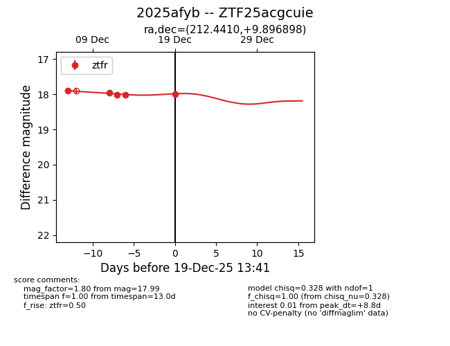
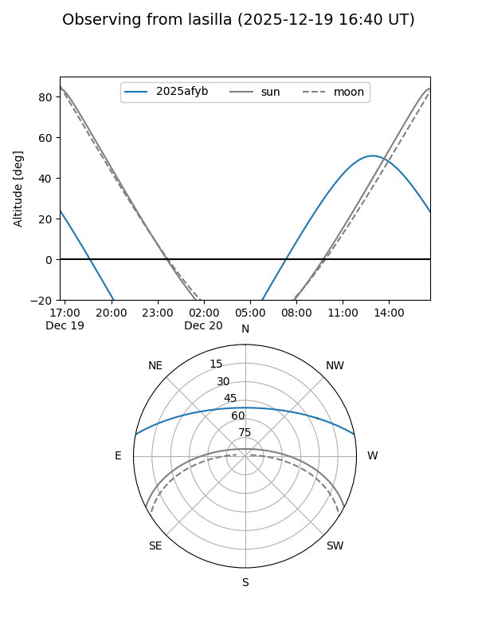
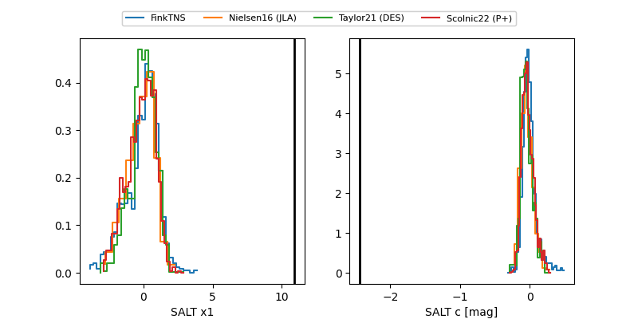

2025afyb
Target 2025afyb at 2025-12-20 16:43
Aliases and brokers:
FINK: fink-portal.org/ZTF25acgcuie
Lasair: lasair-ztf.lsst.ac.uk/objects/ZTF25acgcuie
ALeRCE: alerce.online/object/ZTF25acgcuie
TNS: wis-tns.org/object/2025afyb
YSE: ziggy.ucolick.org/yse/transient_detail/2025afyb
alt names
ZTF25acgcuie (ztf,fink_ztf)
2025afyb (tns,yse)
Coordinates:
equatorial (ra, dec) = 212.4410,+9.89690
equatorial (HMS+DMS) = 14:09:45.84,+09:53:48.83
galactic (l, b) = (353.6300,+64.74400)
Flags:
Photometry:
last ztfr=18.03
6 ztfr detections
Lightcurve

Visibility


Additional plots
